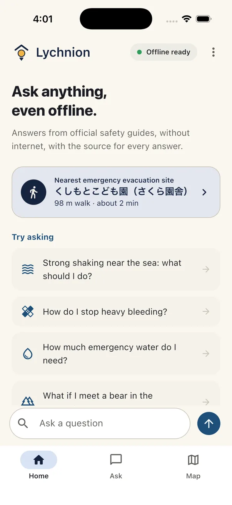

A small light in your hand, for when the network goes down.
Lychnion answers your questions from official guides. It shows shelters and safe places on an offline map. It keeps working with no signal.
In development. Not in the App Store or Google Play yet.

What it does
Everything runs on your phone. You do not need an internet connection.
Answers with no signal
Answers come from official guides and show their source. If the guides do not say it, Lychnion does not guess.
Offline map
See shelters and safe places on the map without the internet. You save the map to your phone before you go.
Every phone at a shelter
At a shelter, one local computer can answer the questions of phones nearby over Wi‑Fi.
Packages for where you go
Lychnion is not only for disasters. You add guide and map packages for places where you may have no network.
- Disaster preparedness For earthquakes and tsunamis. Shelters and official safety guides.
- Hiking In the mountains, out of range. Trails, huts and mountain safety.
- Backcountry skiing In the snow. Avalanche safety and the way back.
- Sailing On the water. Harbours and safety at sea. Under consideration
“Lychnion” (say “lik-NEE-on”) is Greek for “small lamp”. We want it to be a light in the dark that shows where you are and which way to go.